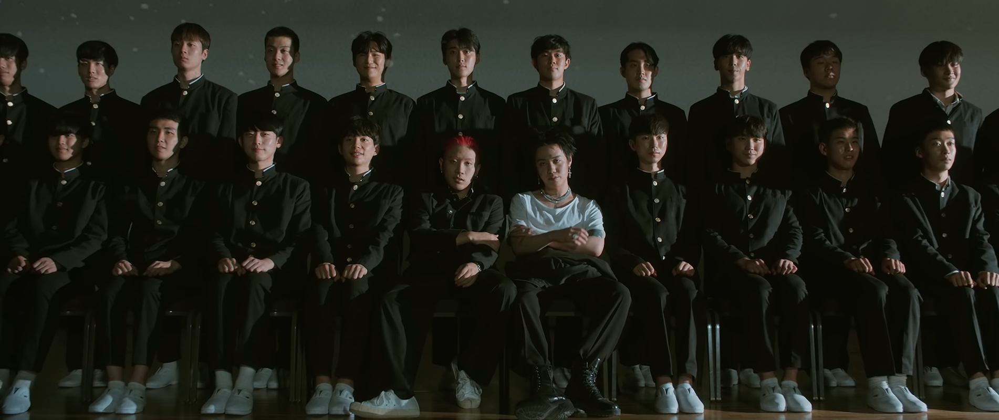

В Южной Корее отношение к отечественному хип-хопу неоднозначное — его представителей часто называют «хип-хоп лузерами», намекая на копирование американских исполнителей и высмеивая за любовь похвастаться дорогими штучками. Феминистки активно выражают свою ненависть к хип-хоперам за обнаженных женщин в клипах и не всегда пристойную лирику. Но факт остается фактом — хип-хоп в Корее популярен и отлично продается. К примеру, шоу на выживание для начинающих рэперов Show Me the Money («Деньги на бочку» в русскоязычном переводе — прим.редакции) уже выпустило девять сезонов и один специальный сезон Unpretty Rapstar («Дерзкие рэперши»), показало высокие рейтинги и было переведено на множество языков, включая русский. Ежегодно в стране проходят большие хип-хоп фестивали вроде HipHopPlaya и KB Rapbeat Festival, спрос на которые настолько высокий, что даже в этом году из-за коронавируса их не отменили, а провели онлайн. Неудивительно, что хип-хоп индустрия оказывает огромное влияние на корейскую культуру в целом — моду, стиль жизни, развлечения, а иногда и мышление молодежи. Хорошее это влияние или все же плохое — сложный вопрос, но, чтобы лучше понимать увлечения южнокорейцев, стоит рассказать о представителях этой субкультуры.
